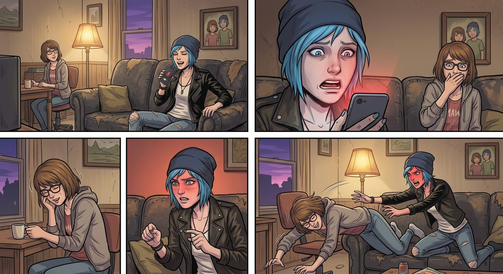

AI 作曲速成班

一、新玩具
Chloe 窩在沙發上刷手機,忽然被 Warren 分享到群組裡的一段音樂勾住了注意力——是他用某個 AI 作曲工具,把一首經典搖滾老歌重新編曲成電子舞曲版本,聽起來荒謬又意外帶感。
「這什麼鬼東西,」Chloe 瞪大眼睛,反覆播放了三遍,「你怎麼弄出來的?」
「AI 作曲工具,」Warren 得意地說,「輸入幾個關鍵詞,選個風格,幾分鐘就能生成一整首歌,連歌詞都能自動編。」
Chloe 眼睛一亮,立刻纏上他:「教我,現在,馬上。」
二、碰壁
在 Warren 的速成教學下,Chloe 很快就上手了基本操作——輸入提示詞、選擇曲風、生成、下載,整個流程確實比她想像中簡單得多。她興致勃勃地玩了一整晚,生成了各種光怪陸離的實驗性曲風,笑得合不攏嘴。
隔天,她野心膨脹,想挑戰更「有意思」的東西——直接把幾段她從小聽到大的經典老歌片段丟進去,想讓 AI 幫忙重新混音改編。
結果每次上傳,系統都彈出同一則制式化的錯誤訊息:「內容涉及版權疑慮,已自動攔截。」
「這什麼玩意,」Chloe 試了七八次,每次都以失敗告終,忍不住抓著 Kenji 抱怨,「換了好幾首都一樣,是我運氣太差嗎?」
「不是運氣問題,」Kenji 頭也不抬地敲著鍵盤,語氣一如既往地平淡,「這些 AI 公司這幾年被幾大唱片巨頭輪番告上法庭,賠了不少錢,現在學乖了,主動加裝了一套版權偵測系統,只要偵測到旋律指紋跟已知曲庫比對相似,直接攔截,不會有任何商量餘地——說白了,他們現在怕死了,寧可錯殺一千,也不敢再冒一次被告的風險。」
Chloe 撅著嘴,一臉不甘心:「那我自己唱總行了吧,原創總沒版權問題。」
三、慘案
她興沖沖地打開錄音功能,清了清嗓子,對著手機麥克風,情緒滿滿地唱了起來。
三秒後,音準以一種近乎災難的方式,大幅度地偏離了原本的旋律線,聽起來像是貓被踩到尾巴的哀鳴,混雜著某種說不出來的破鑼嗓質感。
客廳裡陷入一陣詭異的寂靜。
Max 死死咬著嘴唇,肩膀控制不住地顫抖,終究還是沒忍住,「噗」地一聲笑出來,笑得整個人趴倒在沙發扶手上。
「妳、妳笑什麼!」Chloe 臉瞬間漲紅,又羞又惱。
「沒、沒事,」Max 邊笑邊擺手,眼淚都快笑出來了,「就是……妳這個音準,跟妳打架的狠勁完全不成正比。」
「妳給我等著!」Chloe 一個箭步撲過去,伸手就要掐她,Max 笑著滾開躲避,兩人在沙發上鬧成一團。
四、Rachel 的歌聲
鬧了一陣,Brooke 從旁邊探出頭,若有所思地開口:「話說,Rachel 以前不是唱歌很好聽嗎?我記得她參加過幾次校園表演。」
客廳裡的笑鬧聲瞬間安靜下來。
「如果找到她以前的錄音片段,」Brooke 斟酌著語氣,小心翼翼地繼續說,「現在的 AI 聲音重建技術,理論上可以用那些素材,合成出接近她音色的新演唱版本……妳們要不要考慮一下?」
Chloe 愣住了,手裡還維持著剛才鬧著要掐 Max 的姿勢,一時僵在原地。
她沉默了好一會兒,眼神從最初的震動,慢慢沉澱下來,帶上一絲說不清是釋然還是謹慎的複雜情緒。
「……暫時,」她緩緩開口,聲音很輕,「還是不用了。」
Max 靜靜地握住她的手,沒有追問原因。
Brooke 也沒再多說,只是點點頭,識趣地換了個話題。
Chloe 望著手機螢幕上那個還停留在失敗提示畫面的 AI 作曲介面,輕輕嘆了口氣,把手機螢幕鎖上,靠進 Max 懷裡。
「有些聲音,」她低聲說,像是自言自語,「還是留在記憶裡就好。」
五、房間裡的獨白
那天晚上,眾人陸續散去後,Chloe 找了個藉口說想早點休息,一個人回到房間,輕輕帶上了門。
她躺在床上,盯著天花板發了很久的呆,最終還是伸手拿起手機,點開了那個很少打開的音樂播放清單。指尖在螢幕上劃過一串曲目,最後停在 Daughter 那首她曾經反覆循環過無數次的老歌上——《Before the Storm》。
熟悉的吉他前奏一響起,那種帶著沙啞和頹喪美感的旋律,瞬間把她拉回了很多個難以入眠的夜晚。
Chloe 閉上眼睛,任由那段旋律在昏暗的房間裡緩緩流淌。眼淚不受控制地從眼角滑落,滲進枕頭裡,悄無聲息。
她沒有發出任何哭聲,只是任由那種積壓已久的情緒,順著旋律一點一點滲出來——關於 Rachel、關於那些沒能來得及說出口的道別、關於今晚 Brooke 那個提議背後,她自己都說不清楚的、複雜又脆弱的抗拒。
房門被輕輕推開一條縫,她甚至沒有察覺。
Max 端著兩杯溫水站在門口,看到床上那個蜷縮著、肩膀微微顫抖的身影,腳步頓了頓,沒有出聲,也沒有開燈。
她輕輕把水杯放到床頭櫃上,悄無聲息地爬上床,從背後環住 Chloe 的身體,額頭抵在她的後頸,沒有問「妳怎麼了」,也沒有說任何安慰的話,只是靜靜地陪著這段旋律,把她整個人輕輕擁進懷裡。
Chloe 的身體先是僵了一下,隨即像是找到了某個可以徹底崩潰的支點,終於忍不住哽咽出聲,反手緊緊抓住 Max 環在自己腰間的手臂。
「我沒事,」她哽咽著開口,聲音破碎,「就是……突然很想她。」
「我知道。」Max 的聲音很輕,帶著她鼻尖蹭過髮絲的溫度,「妳不用解釋。」
音樂還在繼續播放,昏暗的房間裡,兩人交疊的呼吸和那段旋律,一起在寂靜中緩緩沉澱。Chloe 的哭聲漸漸平息,最終只剩下均勻的呼吸聲,和 Max 始終沒有鬆開的、溫暖的懷抱。